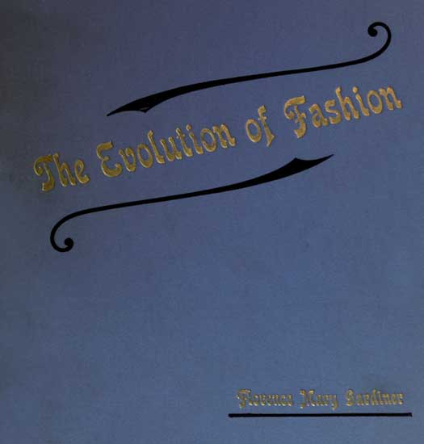
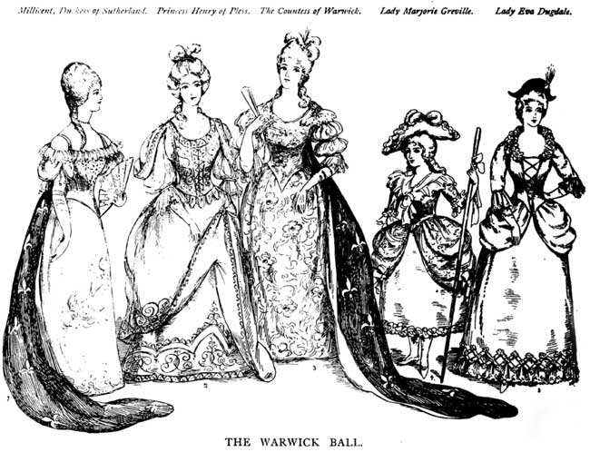

Florence Mary Gardiner, Evolution of Fashion. Davis, ed. from the 1897 edition. [eng]. Cited by chapter/paragraph.
Passages title.0-title.26
urn:cts:fuTexts:gardiner.eof.davis:title.0-title.26

title.1CHAPTER TITLE
title.2The Evolution of Fashion
title.3BY FLORENCE MARY GARDINER
title.4_Author of "Furnishings and Fittings for Every Home," "About Gipsies," &c. &c._
title.6London:
title.7THE COTTON PRESS, GRANVILLE HOUSE, ARUNDEL STREET, W.C.
title.8TO
title.9FRANCES EVELYN,
title.10COUNTESS OF WARWICK,
title.11WHOSE ENTHUSIASTIC AND KINDLY INTEREST IN ALL MOVEMENTS
title.12CALCULATED TO BENEFIT WOMEN IS UNSURPASSED,
title.13THIS VOLUME,
title.14BY SPECIAL PERMISSION, IS RESPECTFULLY DEDICATED,
title.15BY
title.16THE AUTHOR.
title.17IN THE YEAR OF
title.18HER MAJESTY QUEEN VICTORIA'S DIAMOND JUBILEE,
title.191897.

title.22PREFACE.
title.23In compiling this volume on Costume (portions of which originally appeared in the _Ludgate Illustrated Magazine_, under the editorship of Mr. A. J. Bowden), I desire to acknowledge the valuable assistance I have received from sources not usually available to the public; also my indebtedness to the following authors, from whose works I have quoted:--Mr. Beck, Mr. R. Davey, Mr. E. Rimmel, Mr. Knight, and the late Mr. J. R. Planche. I also take this opportunity of thanking Messrs. Liberty and Co., Messrs. Jay, Messrs. E. R. Garrould, Messrs. Walery, Mr. Box, and others, who have offered me special facilities for consulting drawings, engravings, &c., in their possession, many of which they have courteously allowed me to reproduce, by the aid of Miss Juliet Hensman, and other artists.
title.24The book lays no claim to being a technical treatise on a subject which is practically inexhaustible, but has been written with the intention of bringing before the general public in a popular manner circumstances which have influenced in a marked degree the wearing apparel of the British Nation.
title.25FLORENCE MARY GARDINER.
title.26_West Kensington, 1897._